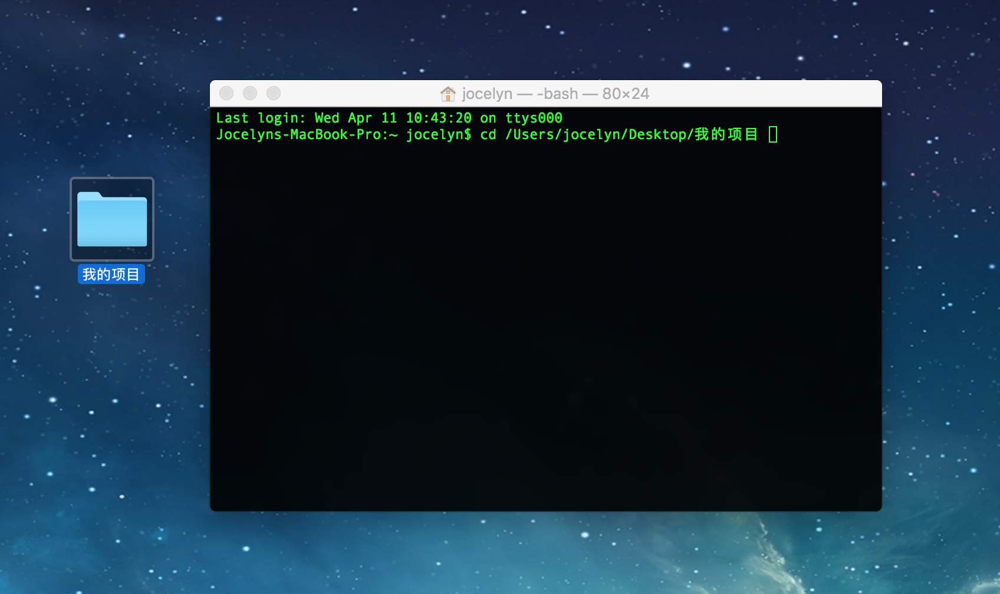
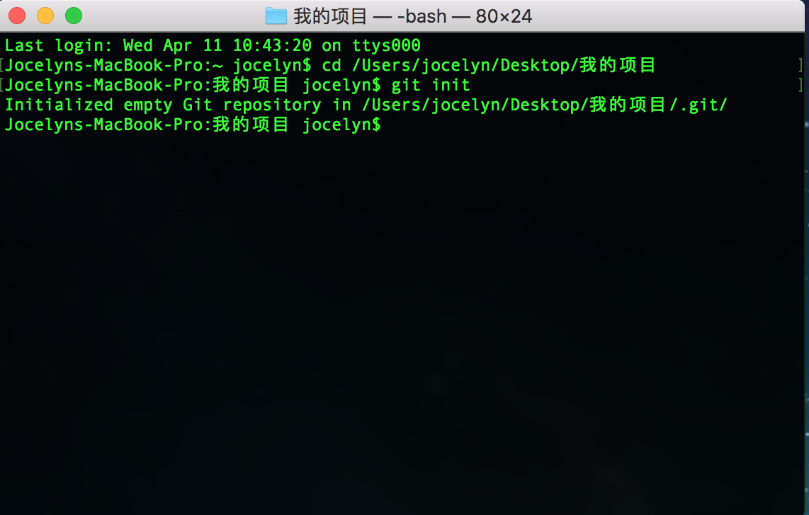
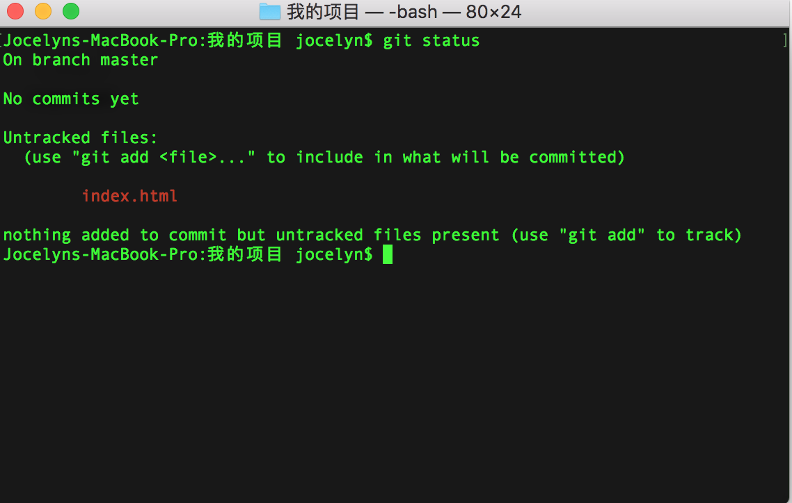
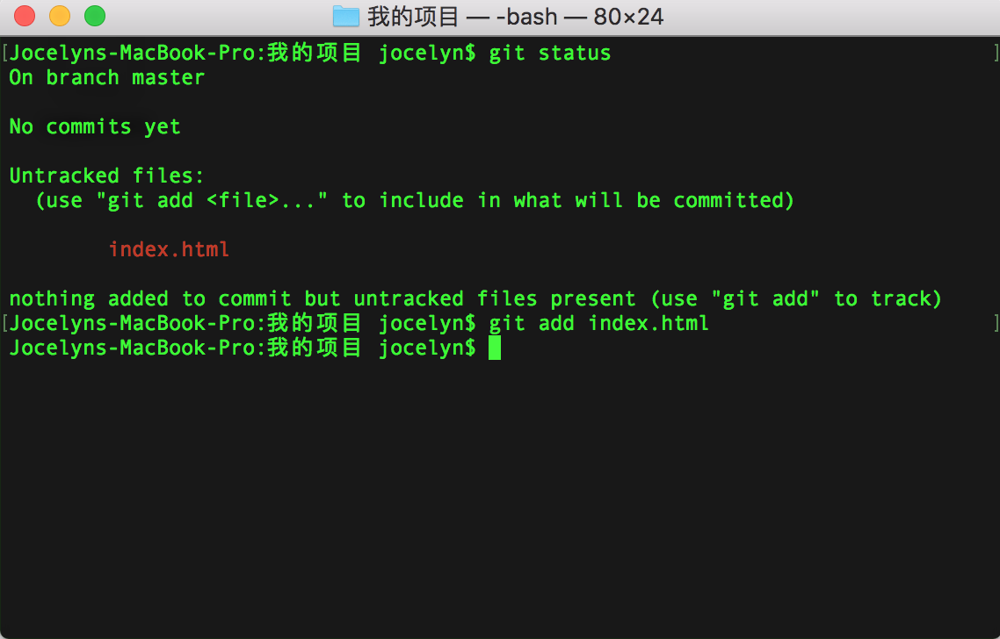
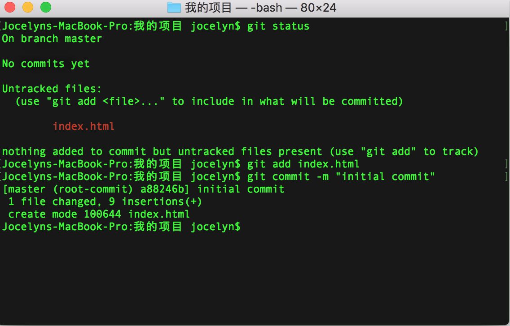

Git 的基本操作入门 01 - 建立本地仓库
这是一个简单粗暴的教程，不深入探究git内部原理，旨在让初学者尽快上手git
Git 粗暴介绍
Git 就是一个版本控制系统(version control system)。Git 就是记录了我们不同版本的代码,便于我们管理。
仓库 (repository) 就是存放代码的地方。 我们为不同的项目建立不同的仓库。Git里存放的是我们所有的仓库。
我们的代码要不断修改，当我们每次有了较大幅度的改动后，就可以把代码放入仓库中确认 (commit)一次。commit可以理解为：“我确定了，我的代码现在就长这个样子。”
Git 最可爱的一点是，它可以和远程仓库 (remote)沟通。我们在自己的电脑上拥有的是本地仓库(local repository)。远程仓库是指托管在网络上的项目仓库，可以有很多个, 比如Github上的仓库。它们的存在是为了多人协作。
为Git的可爱举个栗子🌰：
协作的笨办法是大家写完代码在qq上互相发送压缩文件😂。Git提供的解决方案就是，大家各自写好，然后一起推送(push)到远程仓库去。然后通过融合分支(merge branch)把代码安全地融合在一起。
来，上手git！
第一步：为你的项目建立一个本地仓库
1.

小技巧：你可以在终端打cd 然后把要打开的文件拖拽到终端里。😂就不用自己敲路径了。
- 从终端打开文件夹
- 完成下列操作
<1> 初始化命令1
$ git init

意思是：我要给文件建立git仓库啦
<2> 查看此刻文件状态1
git status

此刻，提示告诉我们文件index.html还没被放入仓库。
后文第二部分有详细介绍这些术语的含义，暂时不用担心看不懂untracked。
这个命令你可以随时用，多次用。
意思是：我要看看此刻文件夹里文件们的状态，它们是被确认记录(committed)好了呢，还是暂时存着(staged)等我确认呢，还是有修改的了但我还没确认(modified)。
根据这条命令后的状态反馈，我们可以决定下一步该做什么。
<3> 添加文件到仓库1
$ git add <此处是文件名>
一般我们新建好的文件，还没被添加到仓库去。所以你会看到图上的内容，提示我们添加文件。
小技巧：添加所有文件1
$ git add -A

这条命令意思就是：我要把文件添加到仓库了。
<4>终于到了最重要的一步，确认。1
2
3
4
5$ git commit -m "这里写你本次操作的记录"
//我们是第一次操作所以可以写成如下：
$ git commit -m "initial commits"

这条就是确认命令。
此刻意思是：我确定刚刚所添加的文件都需要追踪记录。
对应不同操作，它的意思就是，我确认我所做的更改。
到这一步我们已经为项目建好了本地仓库🎉，并且成功把文件放入了仓库中追踪保存。以后我们修改了文件，git都会记录下来。
- 完成了上述一些列操作，可以查看所有commits
1 | $git log |
可以看到所有的commits 记录。最新的commit在最上边。
来，了解下文件的不同状态！
如果每次输入git status后终端返回的一大堆术语让你头疼，那么我们就来了解一下这些术语的意思。
staged: files are already to be committed
意思：文件已经添加到仓库了，等待确认。
所以下一步，我们需要git commit -m “你的记录语言” 操作
upstaged: files with changes that have not been committed
意思：有些文件修改了，还没确认。
所以下一步，我们需要git add “文件名”，先把文件添到仓库，再去确认。
untracked: files are not tracked by Git yet. (indicates a new file)
一般新文件会出现这个状态，意思是，还没添加到仓库。
所以下一步，我们需要git add ”文件名”
deleted: files have been deleted and is waiting to be removed from Git
有些文件被删除了，等待着被移除仓库。
所以下一步，我们需要git rm “文件名”
总结：
- git init //初始化仓库
- git status //查看文件状态
- git add “filename” //(加完以后git status查看一下也可以) //把文件加入仓库
- git commit -m “comments” //确认更改，写好记录。
这是我的第一篇技术博客。希望对大家有帮助 😊，我自己也是还是一个小白，还在探索和学习的路上。下一篇博客会讲Git连接远程仓库。